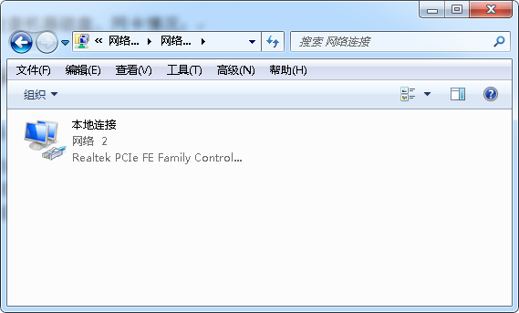

网络操作手册¶
1 网络信息状况¶
1.1 30M电信光纤专线¶
对应外网IP:61.139.78.89
所属IP网断：192.168.0.2—192.168.0.189,192.168.0.199-192.168.0.202
所属交换机端口：ether8
最大稳定宽带速度：3.75 M/s
限制速度：3 M/s
网关地址：61.139.78.0
MAC地址：08:19:A6:24:08:EF
获取方式：静态获取
1.2 100M拨号专线¶
对应外网IP:动态IP
所属IP网断：192.168.0.199-192.168.0.202,192.168.0.203-192.168.0.254
所属交换机端口：ether6
最大稳定宽带速度：12.5 M/s
限制速度：无限制
网关地址：100.64.0.1
交换机 DNS 地址：61.139.2.69
DNS 所属地址：成都电信DNS
1.3 无线WIFI信息¶
| 无线名 | 密码 | 所用IP | 分配的IP |
|---|---|---|---|
| Pinbot-Pro | Hopperclouds2014 | 192.168.0.86 | 192.168.1.x |
| Pinbot-OP | Hopperclouds2016 | 192.168.0.88 | 192.168.3.x |
| Pinbot-RD | Hopperclouds2016 | 192.168.0.89 | 192.168.2.x |
| Pinbot-dev | Hopperclouds2016 | 192.168.0.87 | 192.168.4.x |
注：Pinbot-Pro 公用，Pinbot_OP用于顾问团队，Pinbot_RD、Pinbot-dev用于研发
1.4 公共网络信息¶
公网IP地址：http://61.139.78.89
1.5 移动WIFI信息¶
| 无线名 | 密码 | 管理后台 | 用户名 | 密码 |
|---|---|---|---|---|
| Pinbot-SOS-1 | pinbot123 | 192.168.0.1 | admin | admin |
| Pinbot-SOS-2 | pinbot123 | 192.168.5.1 | admin | admin |
| Pinbot-SOS-3 | pinbot123 | 192.168.6.1 | admin | admin |
| Pinbot-SOS-4 | pinbot123 | 192.168.7.1 | admin | admin |
| Pinbot-SOS-5 | pinbot123 | 192.168.8.1 | admin | admin |
1.6 各账号、设备信息¶
| 设备/线路 | 账号 | 信息 | 密码 | 使用情况 | 紧急联系方式 |
|---|---|---|---|---|---|
| 商务光纤 | 744000023613 | 30M(固定IP) | 部分有线、部分无线 | 17729839890 | |
| 拨号宽带 | 83330727 | 100M(拨号IP） | 83330727 | 部分有线、部分无线 | 18030417167、10000 |
| 专业路由器 | admin | MikroTik-RouterOS | 30M->ether8、100M->ether6 | ||
| 飞鱼星路由器 |
1.7 移动WIFI设置信息¶

移动WIFI测速信息：
网络故故障等级排查及解决方法
2 网络卡顿、延时等情况¶
2.1 网络检查¶
1） 进入总路由后台管理系统（windows系统），浏览器直接进入
后台管理地址：http://61.139.78.89
http://192.168.0.1

2） 检查网络流量情况：
进入系统后选择 Interfaces
 其中ether8属于办公及内网服务器访问30M光纤产生的流量Tx下载(发送)总流量，Rx上传(接收)总流量
其中ether8属于办公及内网服务器访问30M光纤产生的流量Tx下载(发送)总流量，Rx上传(接收)总流量
ether6（pppoe-out1）属于办公及内网服务器访问100M拨号专线产生的流量
2.2 故障分析¶
1） 如果上传或者下载总流量单位以bps为单位时，表示总流量很小；
2） 当流量大于100M时断定为网络风暴（内网机器磁盘、网卡损坏）；
3） 对两个路由器进行单一插拔线路排除，确定内网故障机器；
4） 找到内网故障机器，检查机器磁盘、网卡情况；
3 部分或者全部电脑5-10分钟断网¶
3.1 网络连接设置检查¶
针对部分电脑检查网络IP是否冲突；
打开电脑右下方任务栏网络图标——>选择网络共享中心

——>更改适配器设置

——>选择本地连接

——>右键——>选择属性——>选择Internet 协议版本4（TCP/IPv4）
——>属性——>检查是否为自动获取

3.2 故障解决方法¶
3.2.1 软件配置问题¶
1） 进入总路由后台管理系统（windows系统），浏览器直接进入
后台管理地址：http://61.139.78.89
http://192.168.0.1
2） 软件备份恢复：
进入管理系统后
选择左边 Files ——>选择File Name为 MikroTik-20160430-1657.backup的文件
 ——>选择 Restore 进行正确的网络备份恢复
——>选择 Restore 进行正确的网络备份恢复

注：恢复期间，路由器会重新设置为网络备份的设置，也会重启交换机是配置生效，时间大概5-10分钟左右
4 全部电脑断网超过10分钟¶
注：此时如果按照鼓故障等级2的处理方法也没网时，短时间内难以恢复，需要启动应急方案；
4.1 应急方案一（电信网络都有问题）：¶
1) 将启用5个移动WIFI（目前有一个，后续会增加到5个，单个设备最大支持数为10，检测速度为997K/S）;
2) 所有台式电脑安装无线网卡，网卡自带驱动;
3) 连接移动WIFI共享出来的无线网络;
注：刘毅、nina、慧琳的电脑在使用时需要先弹出CD/TP-Link网卡驱动，然后会再重装；
4.2 应急方案二（电信网络正常，只是交换机硬件故障）：¶
1) 将网络入口直接接入两个企业路由器进行无线共享；
2) 所有台式电脑安装无线网卡，网卡自带驱动
3) 连接共享出来的无线网络
注：可根据网络情况，实时增加移动WIFI设备